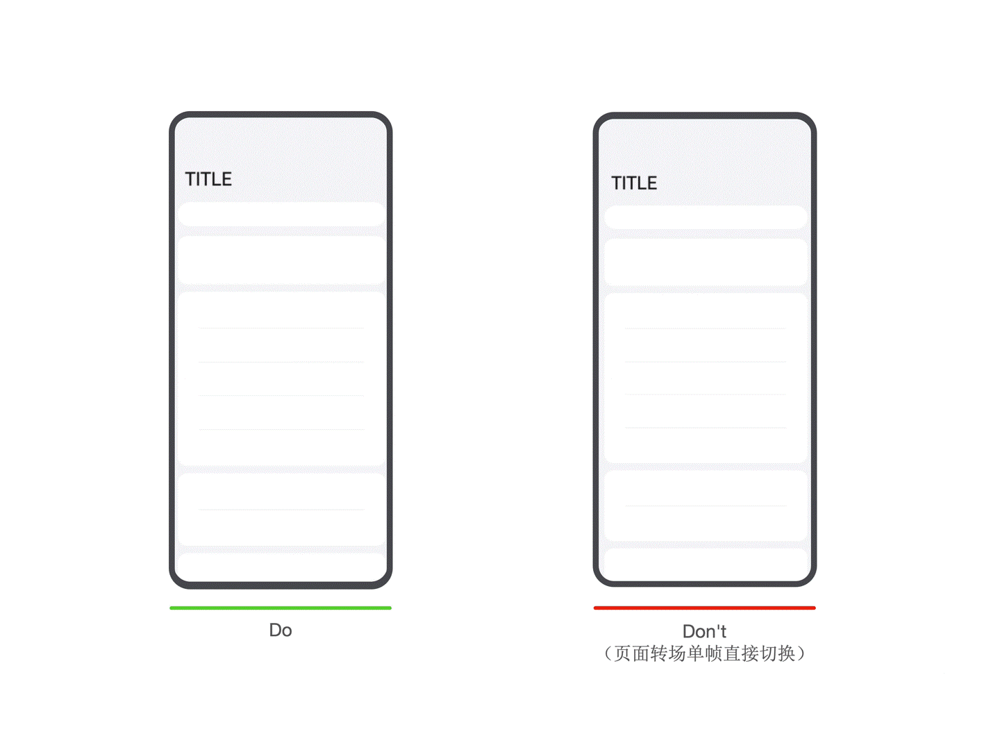
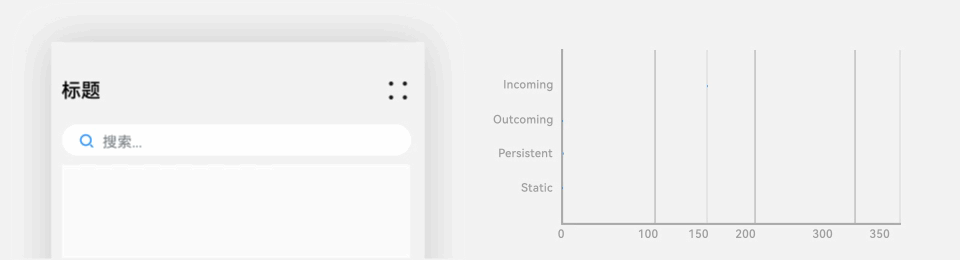
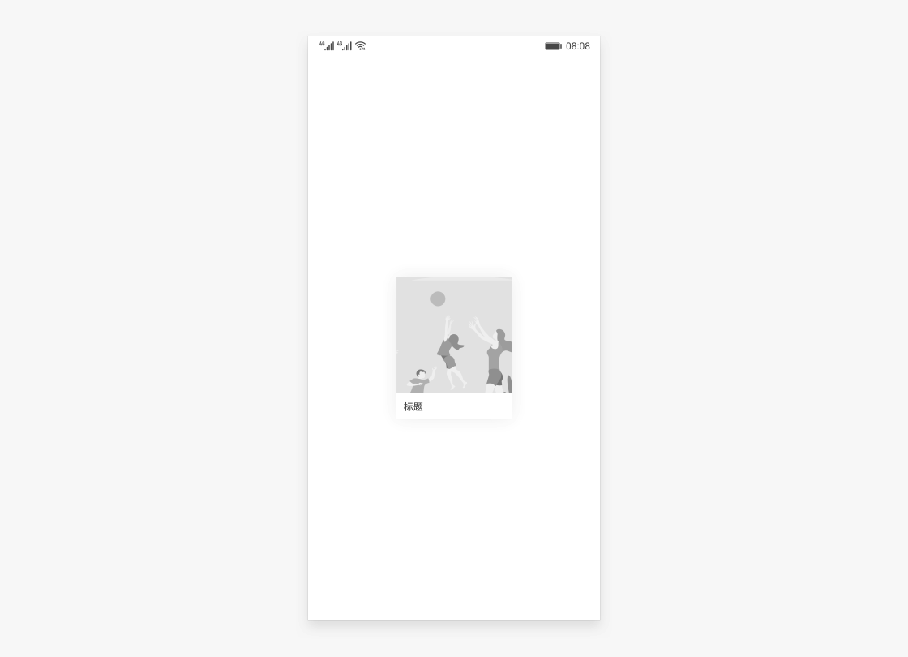
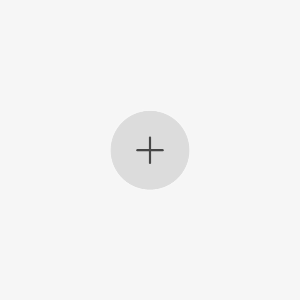

1 Seamless Transitions for a Smooth Visual Experience
1.1 What Is a Seamless Transition?
When using a phone or other smart device, you may notice the screen suddenly stutter when switching pages or opening an app from the home screen, as if a movie suddenly dropped a frame. The immersive experience is instantly broken. However, HarmonyOS HarmonyOS seamless transition animations make this experience different. The following simple image-switching scenario provides an intuitive comparison between a conventional transition and a seamless transition.

1.2 Designing Seamless Transition Animations
A seamless transition is an arrangement that uses shared elements for a transition. It improves task efficiency and visual fluidity, and is a recommended technique for transition design.
Shared elements
A shared element is generally a UI element that persists before and after a transition. It is the focal element users should notice after the transition and enhances continuity.

In this example, the search box is the shared element.
Shared containers
When a group of elements has clear boundaries during a transition, a container can provide continuity. The container interpolates properties such as size, height, and corner radius, while its contents can transition through fades or shared-element techniques.

Shared motion
When intermediate properties are unavailable for interpolation, extract usable shared transition properties to achieve a smooth transition. Common shared motion properties include translation, scaling, and rotation.
Shared scale motion
Shared rotation motion

Related documentation: Transition animations
1.3 Adapting Seamless Transitions
There are several ways to implement seamless transition animations. Choose an appropriate method for the specific scenario during development.
The following table compares the different implementation methods:
|
Seamless transition method |
Characteristics |
Applicable scenarios |
|---|---|---|
|
Change the original container directly without creating a new one |
No route change occurs. Both expanded and collapsed layouts are implemented in one component, and the component hierarchy remains unchanged after expansion. |
Suitable for simple scenarios with low transition overhead, such as opening a page that does not need to load large amounts of data or many components. |
|
Create a container and move components across containers |
Use NodeController to move a component from one container to another. At the start of the move, apply translation and scaling based on the positions and sizes of the two layouts so that the component aligns with the initial layout and avoids a visual jump. Then add an animation to reset these properties and create a seamless transition from the initial layout to the target layout. |
Suitable for scenarios where creating new objects is expensive, such as tapping a live-stream component to enter full screen. |
|
Use geometryTransition for a shared-element transition |
Use system capabilities to bind the components before and after the transition to the same ID through the geometryTransition API, and place the transition logic in the animateTo animation closure. The system then automatically adds a seamless transition. |
The system adjusts the size and position of the bound components to the same values and switches their opacity to create a seamless transition. To achieve smooth animation, ensure that size animations on nodes bound with geometryTransition do not jump. This method is suitable when creating new nodes has low overhead. |
1.4 Seamless Transition Scenarios
1.4.1 Seamless Transitions for Cards and Lists
In a waterfall-flow or list layout, when users tap a card or list item, the app performs a smooth transition from the overview page to the details page.
Reference examples
- Best practice "Developing Seamless Transition Animations".
- Sample code "Transition Animation Collection".